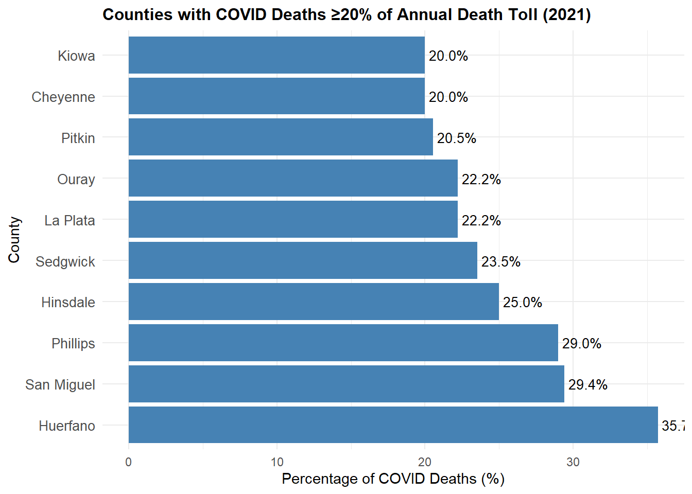
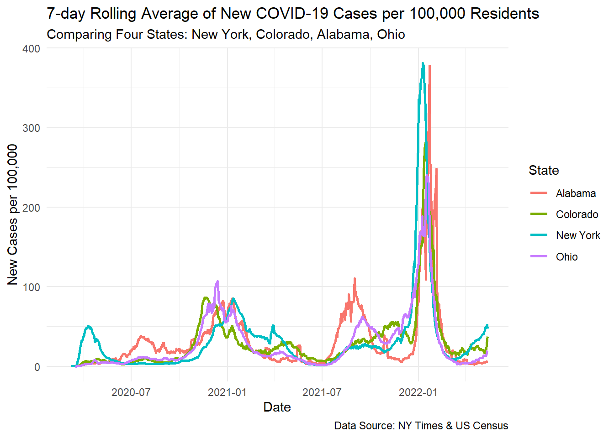
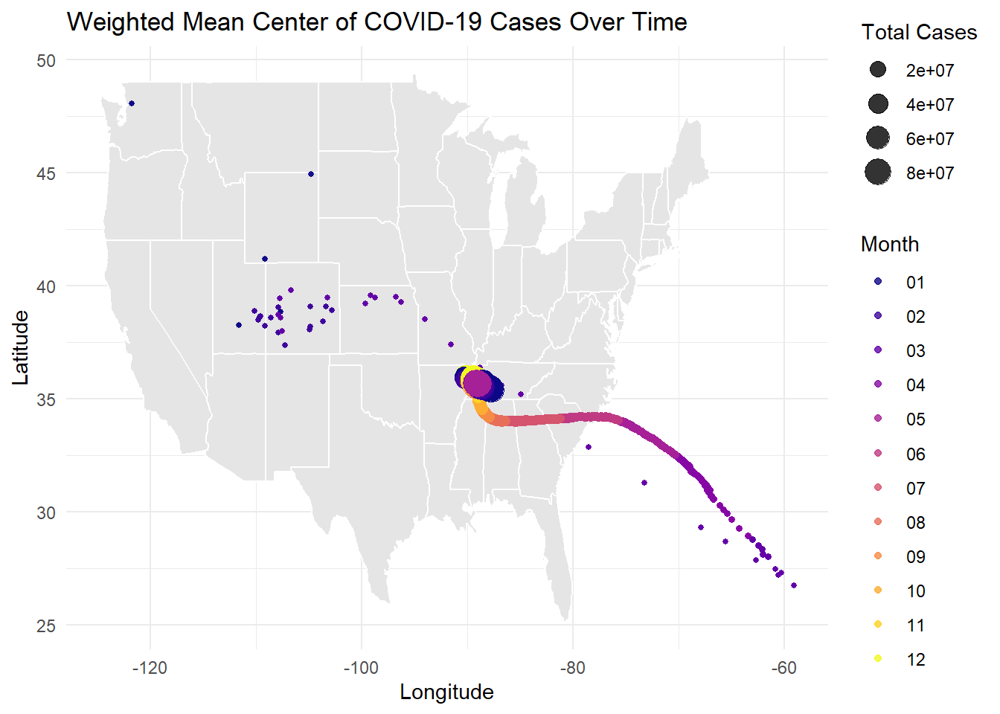

Rows: 2502832 Columns: 6
── Column specification ────────────────────────────────────────────────────────
Delimiter: ","
chr (3): county, state, fips
dbl (2): cases, deaths
date (1): date
ℹ Use `spec()` to retrieve the full column specification for this data.
ℹ Specify the column types or set `show_col_types = FALSE` to quiet this message.
Question 1: Public Data
The value of open environmental and health data cannot be overstated. When readily accessible, this data: - Enables scientists to establish climate trends spanning decades, creating the foundation for predictive models. - Allows researchers to identify correlations between environmental factors and public health outcomes. - Provides the evidence necessary for effective resource management and conservation efforts. - Democratizes scientific information, allowing diverse stakeholders to analyze and interpret the data. When this open data becomes inaccessible: - Long-term trend analysis becomes fragmented and difficult. - Researchers lose the ability to reproduce findings. - Policy decisions may be made without complete information. - Public trust in scientific and governmental institutions is worn down.
Rows: 2502832 Columns: 6
── Column specification ────────────────────────────────────────────────────────
Delimiter: ","
chr (3): county, state, fips
dbl (2): cases, deaths
date (1): date
ℹ Use `spec()` to retrieve the full column specification for this data.
ℹ Specify the column types or set `show_col_types = FALSE` to quiet this message.
Warning: There were 54 warnings in `summarise()`.
The first warning was:
ℹ In argument: `population = max(population, na.rm = TRUE)`.
ℹ In group 2: `county = "Alamosa"`.
Caused by warning in `max()`:
! no non-missing arguments to max; returning -Inf
ℹ Run `dplyr::last_dplyr_warnings()` to see the 53 remaining warnings.
a flextable object.
col_keys: `Date`, `County`, `Cases`
header has 1 row(s)
body has 5 row(s)
original dataset sample:
Date County Cases
1 2022-02-01 El Paso 170,673
2 2022-02-01 Denver 159,022
3 2022-02-01 Arapahoe 144,255
4 2022-02-01 Adams 126,768
5 2022-02-01 Jefferson 113,240
print(new_cases_table)
a flextable object.
col_keys: `Date`, `County`, `Cases`
header has 1 row(s)
body has 5 row(s)
original dataset sample:
Date County Cases
1 2022-02-01 El Paso 630
2 2022-02-01 Arapahoe 401
3 2022-02-01 Denver 389
4 2022-02-01 Adams 326
5 2022-02-01 Jefferson 291
Rows: 3195 Columns: 67
── Column specification ────────────────────────────────────────────────────────
Delimiter: ","
chr (5): SUMLEV, STATE, COUNTY, STNAME, CTYNAME
dbl (62): REGION, DIVISION, ESTIMATESBASE2020, POPESTIMATE2020, POPESTIMATE2...
ℹ Use `spec()` to retrieve the full column specification for this data.
ℹ Specify the column types or set `show_col_types = FALSE` to quiet this message.
population_data <- population_data %>%filter(substr(FIPS, 1, 2) =="08")#Exploring the datasetnames(population_data)
[1] "FIPS" "county_name" "Population_2021"
dim(population_data)
[1] 64 3
nrow(population_data)
[1] 64
str(population_data)
tibble [64 × 3] (S3: tbl_df/tbl/data.frame)
$ FIPS : chr [1:64] "08001" "08003" "08005" "08007" ...
$ county_name : chr [1:64] "Adams County" "Alamosa County" "Arapahoe County" "Archuleta County" ...
$ Population_2021: num [1:64] 523544 16579 656855 13806 3490 ...
After reading in and filtering the population data to only include Colorado counties, the dataset contained 64 rows and 3 columns. The columns are: - FIPS: a 5-digit character code identifying each county, combining the state code (08 for Colorado) and the county code. - County_Name: the name of each county - Population_2021: the estimated population of each county in 2021, reported as a numeric value. The filtered dataset is well-suited for joining with the Colorado COVID data using the FIPS column, allowing us to normalize COVID case counts based on population size.
range(population_data$Population_2021)
[1] 741 737287
The population of Colorado counties in 2021 ranges from 741 people in the smallest county to 737,287 people in the largest county. This wide range underscores the importance of normalizing COVID case counts by population, as raw case counts alone would unfairly compare large and small counties.
colorado <- colorado %>%mutate(fips =as.numeric(fips))colorado <- colorado %>%mutate(FIPS =paste0(sprintf("%02d", fips %/%1000), sprintf("%03d", fips %%1000)) ) %>%left_join(population_data, by ="FIPS")colorado <- colorado %>%mutate(per_capita_cumulative_cases = cases / Population_2021,per_capita_new_cases = new_cases / Population_2021,per_capita_new_deaths = new_deaths / Population_2021 )colorado_2021 <- colorado %>%filter(date =="2021-01-01")top_cumulative_cases <- colorado_2021 %>%arrange(desc(per_capita_cumulative_cases)) %>%select(county_name, per_capita_cumulative_cases) %>%slice_head(n =5)top_new_cases <- colorado_2021 %>%arrange(desc(per_capita_new_cases)) %>%select(county_name, per_capita_new_cases) %>%slice_head(n =5)library(flextable)top_cumulative_cases_table <-flextable(top_cumulative_cases) %>%set_caption("Top 5 Counties with Most Cumulative Cases Per Capita on 2021-01-01")top_new_cases_table <-flextable(top_new_cases) %>%set_caption("Top 5 Counties with Most New Cases Per Capita on 2021-01-01")top_cumulative_cases_table
ggplot(high_covid_deaths, aes(x =reorder(county_name, -percentage_covid_deaths), y = percentage_covid_deaths)) +geom_bar(stat ="identity", fill ="steelblue") +coord_flip() +labs(title ="Counties with COVID Deaths ≥20% of Annual Death Toll (2021)",x ="County",y ="Percentage of COVID Deaths (%)") +theme_minimal() +theme(axis.text.y =element_text(size =10),plot.title =element_text(size =12, face ="bold") ) +geom_text(aes(label =sprintf("%.1f%%", percentage_covid_deaths)), hjust =-0.1,size =3.5)

Question 6: Multi-State
library(dplyr)library(ggplot2)library(zoo)state_pop_data <-tibble(state =c("Alabama", "Colorado", "New York", "Ohio"),population =c(5024279, 5773714, 19453561, 11689100))state_covid_per_capita <- covid_data %>%filter(state %in%c("Alabama", "Colorado", "New York", "Ohio")) %>%left_join(state_pop_data, by ="state") %>%group_by(state, date, population) %>%summarise(daily_cases =sum(cases, na.rm =TRUE), .groups ='drop') %>%group_by(state) %>%mutate(daily_new_cases = daily_cases -lag(daily_cases),new_cases_per_100k = (daily_new_cases / population) *100000,rolling_avg_per_100k = zoo::rollmean(new_cases_per_100k, k =7, fill =NA, align ="right") ) %>%ungroup()ggplot(state_covid_per_capita, aes(x = date, y = rolling_avg_per_100k, color = state)) +geom_line(size =1) +labs(title ="7-day Rolling Average of New COVID-19 Cases per 100,000 Residents",subtitle ="Comparing Four States: New York, Colorado, Alabama, Ohio",x ="Date",y ="New Cases per 100,000",color ="State",caption ="Data Source: NY Times & US Census" ) +theme_minimal()
Warning: Using `size` aesthetic for lines was deprecated in ggplot2 3.4.0.
ℹ Please use `linewidth` instead.
Warning: Removed 28 rows containing missing values or values outside the scale range
(`geom_line()`).

Scaling by population had a significant influence on the analysis because it helps to level the playing field between states of different sizes. Without adjustment, larger states like New York and California would naturally have much higher case counts simply because they have more people. This makes it harder to fairly compare them to smaller states like Ohio. When we adjust for population, however, the analysis focuses on the rate of infection rather than just the numeric totals of cases. The process of scaling highlights the importance of considering prevalence relative to population size, which can change the story compared to simply looking at total case counts.
Rows: 3221 Columns: 3
── Column specification ────────────────────────────────────────────────────────
Delimiter: ","
chr (1): fips
dbl (2): LON, LAT
ℹ Use `spec()` to retrieve the full column specification for this data.
ℹ Specify the column types or set `show_col_types = FALSE` to quiet this message.
Warning: Returning more (or less) than 1 row per `summarise()` group was deprecated in
dplyr 1.1.0.
ℹ Please use `reframe()` instead.
ℹ When switching from `summarise()` to `reframe()`, remember that `reframe()`
always returns an ungrouped data frame and adjust accordingly.
`summarise()` has grouped output by 'date'. You can override using the
`.groups` argument.
ggplot(covid_wmc, aes(x = weighted_lon, y = weighted_lat, color = month, size = total_cases)) +borders("state", fill ="gray90", colour ="white") +geom_point(alpha =0.8) +scale_color_viridis_d(option ="plasma") +theme_minimal() +labs(title ="Weighted Mean Center of COVID-19 Cases Over Time",x ="Longitude",y ="Latitude",color ="Month",size ="Total Cases" )

The graph above shows the weighted mean center of COVID-19 cases over time. The visualization shows a clear pattern of movement from west to east across the country, with points colored by month and sized according to total case numbers. There appears to be a concentrated curve showing how the weighted center of cases moved across the southern United States over time. Early in the pandemic, cases were more concentrated in the western/central US, but as time progressed, the center of gravity for cases shifted toward the eastern and southeastern parts of the country.